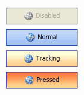
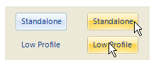

KryptonButton
Use the KryptonButton control when you need button functionality combined with the styling features of the Krypton Toolkit. This control allows the user to initiate an action by pressing the button in order to generate a Click event. Place code in the Click event handler to perform the required action. The content of the control is contained in the Values property. You can define Text, ExtraText and Image details within the Values property.
Appearance
Use the ButtonStyle property to define the top level styling required for the appearance of the KryptonButton control. The default value of Standalone gives a solid appearance that should be appropriate for use in most circumstances. Alternatively you can use the LowProfile setting for situations where you need a transparent border and background. See figures 2 and 3 below for examples of the visual difference. A third button style ButtonSpec is used by default for button specifications that are placed inside KryptonHeader and KryptonHeaderGroup controls. Buttons that appear on the caption area of a KryptonForm use the Form style. There are also custom styles that can be defined via a KryptonPalette for situations where you need to create variations on the styles already provided. Custom styles are named simply Custom1, Custom2 and Custom3.
You can use the Orientation property to rotate the control. The default setting of Top shows the content in a left to right and top to bottom arrangement. Specify Bottom to have the control displayed upside down, Left to show the content rotated 90 degrees left and Right for 90 degrees rotated right. See figure 1 for examples.

Figure 1 – Orientation Property
Four States
The button can be in one of four possible states, Disabled, Normal, Tracking and Pressed. If the control has been disabled because the Enabled property is defined as False then the button will be in the Disabled state.
When enabled the button will be in the Normal state until the user moves the mouse over the button at which point it enters the Tracking state. If the user presses the left mouse button whilst over the control then it enters the Pressed state.
In order to customize the appearance of the control in each of the four states you can use the properties StateDisabled, StateNormal, StateTracking and StatePressed. Each of these properties allows you to modify the background, border and content characteristics.
Common State
To speed up the customization process an extra StateCommon property has been provided. The settings from this are used if no override has been defined for the state specific entry. Note that the specific state values always take precedence and so if you define the border width in StateNormal and StateCommon then the StateNormal value will be used whenever the control is in the Normal state. Only if the StateNormal value is not overridden will it look in StateCommon.
Imagine the following scenario; you would like to define the border of the button to be 3 pixels wide with a rounding of 2 pixels and always red. Without the StateCommon property you would need to update the same three border settings in each of StateDisabled, StateNormal, StateTracking and StatePressed properties. Instead you can define the three border settings in just StateCommon and know they will be used whichever of the four appearance states the button happens to be using.
State Overrides
There are two additional properties called OverrideDefault and OverrideFocus that are involved in altering the appearance of the control. Notice that these start with the Override prefix instead of the usual State. This is because they do not relate to a specific control state such as Normal or Tracking. Instead they can be applied to any of the four possible states and are used to override the appearance that would otherwise be shown.
Focus Override
If the control currently has the focus then the OverrideFocus settings are applied. This can occur when the control is in Normal, Tracking or Pressed states. By default the override only alters the appearance so that a focus rectangle is drawn around the content so that the user can see that the control currently has the focus.
Default Button Override
Each Form has the concept of a default button that is clicked when the user presses the Enter key. The KryptonButton also supports the default button mechanism and OverrideDefault settings are applied to the appearance whenever the control has been designated as the default.
Overlay Images
You can also set overlay images for button images.
Examples of Appearance
Figure 2 shows the appearance when the default ButtonStyle of Standalone is used. You can see that all the different states are drawn as solid controls. The third button down shows how the default button and focus overrides have affected the appearance of the Normal state above it.

Figure 2 – ButtonStyle = Standalone
Figure 3 shows exactly the same states but this time the ButtonStyle is LowProfile. This time the background is transparent in the Disabled and Normal states. This button style is intended for use when you need to overlay a button onto a background and you want the button to be low profile and only light up when the user is interacting with it.

Figure 3 – ButtonStyle = LowProfile